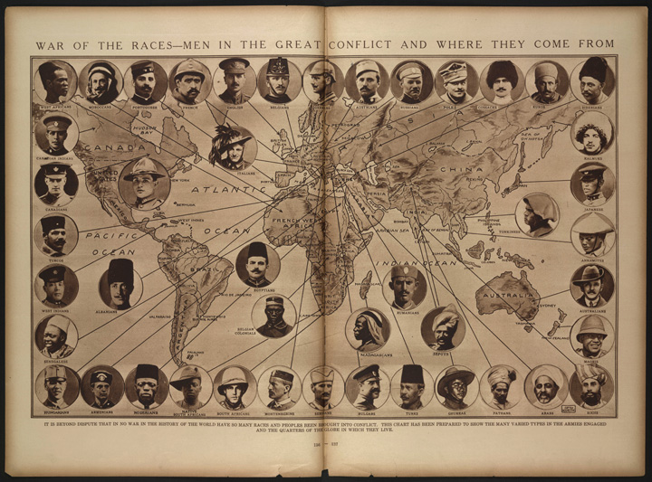
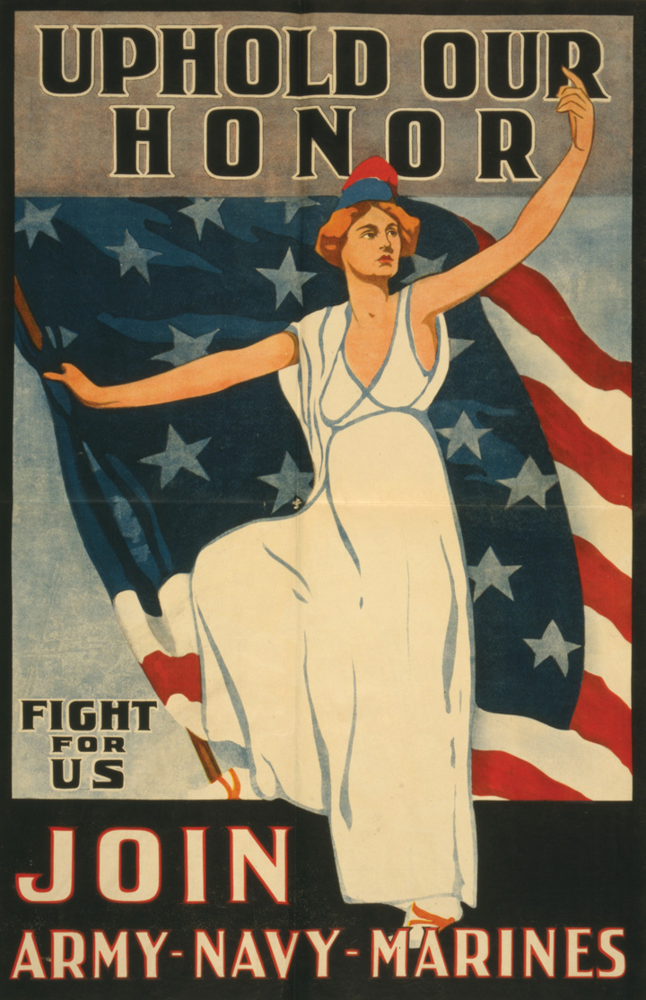
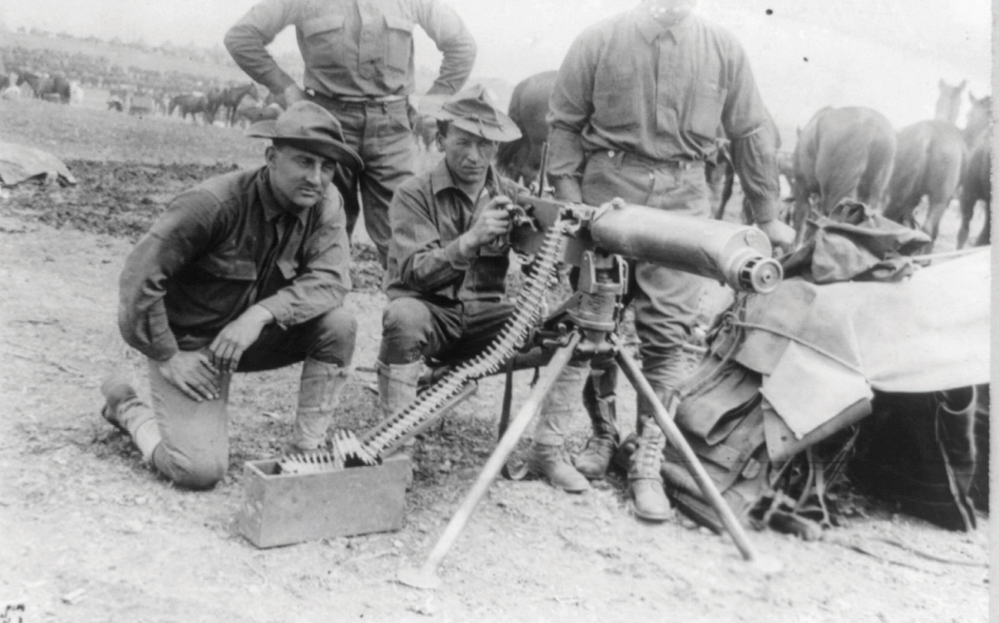
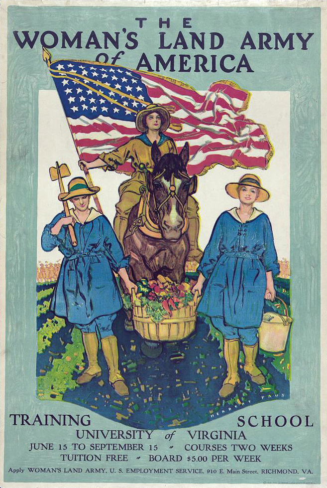
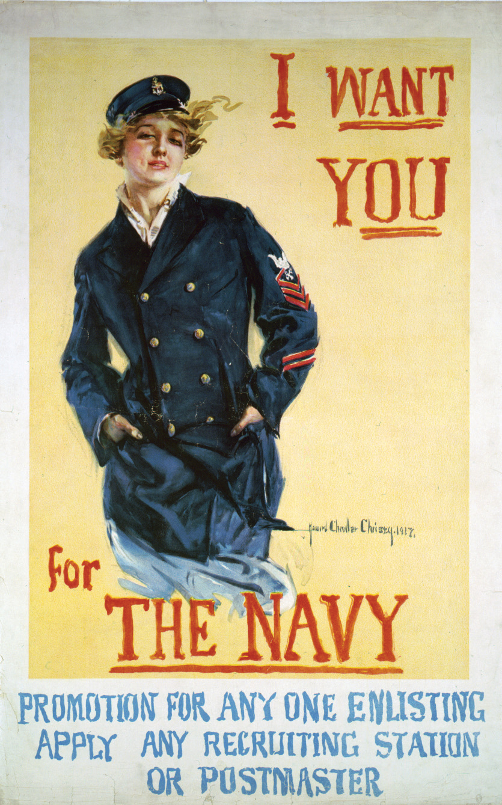
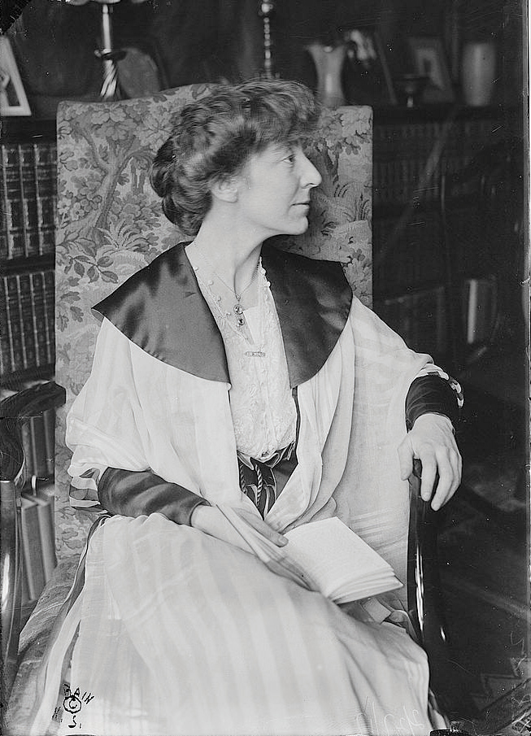
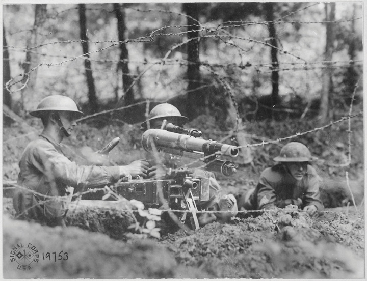

The Schlieffen PlanA strategic German offensive based on attacking France through Belgium rather than their shared border. This plan was drafted long before World War I, a fact that has been cited as proof of German bellicosity. However, most of Europe’s leading empires had multiple contingency plans for various offensive and defensive strategies. had been developed in advance by German military commanders and proposed a way to win a quick and limited war in France by attacking through Belgium rather than the well-defended border between Germany and France. After prevailing over France, German commanders planned to transfer these troops to counter the threat posed by the Russian army in east. Following the strategy laid out by the Schlieffen Plan, German troops entered Belgium on August 3, 1914. They initially encountered much stronger resistance than they had expected, and some of the German commanders responded by ordering cities burned to the ground. The resistance delayed the German advance and allowed France to begin redeploying its troops. On the Eastern Front, Russian forces mobilized much faster than anticipated and threatened East Prussia. The German high command placed General Paul von Hindenburg in charge of the defense of Germany’s Eastern Front and shifted some of the troops planned to participate in the invasion of France to the east. At the Battle of Tannenberg in late August, Russian troops were surrounded, and over 70,000 were killed or wounded before the remaining 90,000 surrendered. The Russian defeat temporarily neutralized the threat to Germany in the east, although this success came at the cost of reducing the number of German forces in the west. Due to Belgian resistance and the redeployment of forces, Germany did not secure its hold on Belgium until August 20.
Figure 5.10

This map shows the French and German battle plans. The French hoped to cross into Southern Germany while the German Schlieffen Plan was based on a quick offensive through Belgium and Northern France.
Britain’s relatively small land army rushed to eastern France and joined the French in their defense against the German army. In general, this action was a fighting retreat, and by September 5, the Germans had reached France’s Marne River. By this time, French troops had been transferred from the southern border with Germany and mounted a fierce resistance in the Battle of the MarneA major turning point in World War I, British and French troops stopped the German offensive in a week of heavy fighting in early September 1914. Both sides formed defensive trenches that neither were able to surmount, marking the transition to a war of attrition.. In the next week, a million troops on each side clashed, dug defensive trenches, and attempted to outflank the other’s lines of defense. The French stalled the German offensive at the Battle of the Marne and forced the Germans to fall back behind a line of defensive trenches forty miles east of the Marne River. Behind these trenches, the Germans rallied and were able to halt the British and French counterattack.
Each side attempted to go around the other’s trenches while rapidly constructing its own line of defensive fortifications, complete with artillery and machine-gun nests. In an era before modern tanks and aircraft, neither side could overrun the other’s trenches with infantry and cavalry charges. As a result, whichever side could maneuver around the other’s trenches would hold the upper hand. In what has been dubbed “The Race to the Sea,” both sides sought to maneuver their forces north before the other could counter. The race was a draw, and the Western Front was transformed into nearly five hundred miles of frontline trenches after neither side was able to outflank and get around the trenches the other was constructing. In front of these networks lay a vast no-man’s-land where millions of rounds of ammunition and artillery shells killed every living thing. Behind the trenches was a vast network of miles of secondary trenches. When both sides reached the English Channel, and with nowhere else to maneuver, a deadlock ensued.
The German failure was a result of underestimating Belgium and French resistance, assuming Britain would not send its army to defend France, and underestimating the speed of Russian mobilization. As a result, Germany was forced to fight a war on multiple fronts—the very thing the Schlieffen Plan was designed to prevent. In the next four years, millions died during a series of failed attempts to push the enemy from the relative safety of its disease and vermin-infested trenches. Millions of men lived in these trenches, enduring daily artillery barrages and the constant threat of sniper fire if they ever allowed their head to rise above ground level. Mud and human refuse were constant companions, as were diseases such as trench foot, which could only be cured by amputation.
Figure 5.11

This map shows the location of both armies along a long defensive line of trenches after the French stalled the German offensive at the Battle of the Marne in 1914. For the next three years, the bulk of the fighting in the Western Front was along this line of trenches.
Americans were shocked by the daily carnage of this war of attrition as tens of millions of rounds of artillery shells were launched and frequent attempts were made to overcome hundreds of machine-gun crews by massing thousands of men in deadly frontal assaults. At various points, both sides attempted to overwhelm the other by sending a human tidal wave over the top of their trenches and across no-man’s-land. Germany launched just such an offensive in February 1916 in hopes of overwhelming the French fortress city of Verdun. Even though the Germans succeeded in taking Verdun, the French simply constructed more defensive fortifications just past the city, which negated any tactical advantage the Germans might have won. France then responded with its own counterattack against the exhausted Germans, which resulted in the recapture of Verdun. After ten months, over a million men were killed or injured in the battle around Verdun, and neither side had gained any ground. The British launched a similar offensive between July and November 1916. Known as the Battle of the Somme, the British advanced only six miles and lost a million casualties.
The Germans had greater success on the Eastern Front, capturing Warsaw and driving Russian troops back from their previous advance, and inflicting 2 million casualties in 1915 alone. Russia’s immense army absorbed these losses, while launching its own successful offensives against Austria-Hungary. The Russian advance motivated Romania to enter the war on the side of the Allied Powers, even though it had earlier formed an alliance with Germany. Like Romania, Italy had been aligned with Germany, but it declared neutrality at the start of the war and later joined the Allied Powers in hopes of territorial preservation and expansion. Similar to the experience of Romania, Italy enjoyed modest success against the forces of Austria-Hungary but was unable to defeat the German reinforcements that were later sent to Southern Europe. The greatest suffering in the east was borne by the Russians. An estimated 3.6 million soldiers were killed or missing while 2.1 million men languished in German prisoner-of-war camps. In a nation that was already suffering internal turmoil before the war, Russians turned against their government, who they held responsible for the war and the famine that ravaged the countryside.
The Russian RevolutionA popularly supported revolution that overthrew the Tsarist government of Russia in February 1917. After a period of civil war, the Bolshevik Party seized power, installed a Socialist government, and signed an armistice with Germany prior to the end of World War I. began in February, leading to the abdication and eventual execution of the czar. At first, Russians were optimistic that their provisional government would restore stability. However, the Russian army suffered reverses in the field, while vital resources were diverted from the people of Russia to support the war effort. Worker’s councils known as “Soviets” demanded increasing authority over the political affairs of the nation. As the war continued to bring little but suffering to the Russian people, a Socialist Party known as the Bolsheviks emerged as the leading political faction in Russia. The Bolsheviks enjoyed the support of the peasants and workers with their promise to end the war immediately and provide landownership for farmers and collective ownership of factories for urban workers.
Figure 5.12

In the wake of the Russian Revolution, both Russia and Romania signed an armistice with Germany. Both nations were forced to accept severe terms by the Germans. In this French image, Germany is crushing a man representing Russia and holding a knife to the neck of a woman representing Russia.
The Bolsheviks were led by Vladimir Lenin who seized power in November 1917 and quickly signed an armistice halting the war between Germany and Russia. By March, the cease-fire was permanent with the signing of the Brest-Litovsk Treaty, which declared a formal end to hostilities between Germany and Lenin’s Socialist government in Russia. A civil war between Lenin’s supporters and his opponents waged for the next two years in Russia, but the supporters of Lenin prevailed against those who sought a return to the czarist government. A small contingent of American troops was deployed to aid those who opposed the Bolsheviks. Although militarily insignificant, the US intervention demonstrated the hostility of many Americans toward Socialism and led to strained relations between the two countries.
Along the Western Front, men who were conscripted into the French army began refusing orders they believed were suicidal. Similar refusals to go over the top were encountered among German and British troops who felt no desire to prove their patriotism by advancing against machine guns in battles that sacrificed the lives of tens of thousands of troops to achieve marginal strategic gains. In January 1917, President Wilson had attempted to capitalize on a nascent but growing peace movement in Europe. He hoped to negotiate an agreement whereby each belligerent nation would agree to return to the territorial status quo before the war. The German Reichstag met in July 1917 and discussed Wilson’s idea of “peace without victory.” The Catholic Centre Party and the Socialists declared their willingness to discuss peace under these conditions. Although many leftists and moderates throughout Europe likewise favored the idea and the plan actually secured the support of a majority in the German Reichstag, the leaders of Europe rejected the idea. A similar plan brokered by the pope also failed.
Two main reasons account for the failure of these attempted negotiations. First, the leaders of Europe still hoped and believed that they would ultimately prevail. To accept a return to the status quo in the midst of the war would be tantamount to admitting that the decision to enter the war was a mistake and millions of soldiers had died in vain. Second, hostility and fear about the growing power of Socialist parties throughout Eastern and Western Europe made those in power even more hesitant to end the war. The Socialists had grown largely because of their consistent opposition to the war as a Capitalist plot. Regardless of the validity of such a theory, ending the war without declaring a victor would raise grave questions about the lofty pronouncements that were made to justify the war and even more questions about the present leadership of one’s nation. Fearful that ending the war would fuel the growth of Socialism, even Wilson sought to thwart the efforts of Socialists who were holding peace conferences throughout Europe. Confident in their eventual victory, while privately candid about the limited value of any potential new territory in comparison to what had been sacrificed to obtain it, the leaders of Europe continued the war. Each believed that only victory might justify the lives of the millions who had already perished.
As the war waged in Europe, President Wilson counseled Americans to be “neutral in thought as well as action.” Even as the nation reasserted its neutrality, neither the president nor the majority of Americans really followed the spirit of this advice. A third of the nation’s people were either European immigrants or the sons or daughters of these “new Americans.” Many Americans of German descent identified with their homeland, while those from Central Europe had a variety of loyalties and concerns that also outweighed their president’s decree. Irish Americans nursed a deep and historic distrust of England. French, British, Belgian, and Russian immigrants understandably favored the Allied Powers. Most American leaders in politics and business were of Western European origins and strongly favored Britain. Sentiment, geography, and the effectiveness of the British naval blockade of German ports in the North Sea led most American businesses to trade with Britain and France. Although neutrality implied that the United States would not act in a manner that favored either side, American farmers provided two-thirds of the food consumed by British soldiers and civilians. Although France had once boasted a productive agricultural system, the loss of labor and the destruction of the French countryside east of Paris created a situation where the French were also increasingly dependent on grain provided by American farmers. American forests, mines, and factories also produced finished goods and raw materials that were essential to the war effort of Britain and France.
Figure 5.13
This map from the New York Times depicts the war as a contest not only between governments and nations but between various races.
As the war dragged on and the western Allied nations could no longer afford to purchase these vital resources with cash, US banks provided the governments and businesses of Western Europe with billions of dollars of loans and credit. Despite its neutrality, the federal government also provided loans to the Allied Powers. German Americans invested $25 million in German banks, a trifling amount in comparison to the billions that were provided to England and France. However, the existence of aid and investment to all nations provided some substance to American claims of neutrality. Secretary of State William Jennings Bryan feared that the trade and credit imbalance might eventually lead the United States into the war to protect US investments, the bulk of which were tied to the fortunes of Britain and France. As an isolationist, he had spent much of the past decade and a half demonstrating the tendency of American loans and investments in Latin America to lead to military intervention in this region. Bryan eventually resigned his position in protest of America’s drift toward the Allied Powers, an occurrence that was welcomed by those favoring greater American intervention and investment. Because America’s historic, economic, and cultural ties to England and France were far stronger than Germany, American neutrality strongly favored the Allied Powers.
Germany recognized that the Western Allies were dependent on American food and credit. The Germans hoped that they might counter this threat by unleashing their submarines on British and French ships that were transporting American-made food and material across the Atlantic. Germany had only 24 submarines in 1914 but had expanded its fleet to 120 submarines by 1917. The German government declared that the sea-lanes leading to Europe and France were war zones and warned Americans that any ship heading toward these ports would be sunk. Americans protested this German declaration as a violation of the rights of neutral nations and a defilement of the international concept of freedom of the seas. Ironically, a similar declaration by the British navy regarding the North Sea—which provided access to German ports—had aroused little concern among most Americans.
On May 15, 1915, a German U-boat sunk the British freighter LusitaniaA British ocean liner that traveled between England and New York until it was sunk by a German submarine in May 1915. Among the more than 1,200 passengers who lost their lives were 128 American citizens.. Of the 1,200 lives lost, 128 were Americans. Despite the fact that the Lusitania was carrying a billion dollars’ worth of war material, including 4 to 6 million rounds of ammunition, most Americans viewed the sinking of the Lusitania as an act of unprovoked aggression. Germans defended the measure as an act of self-defense and emphasized that they had even published warnings to civilians about the danger of traveling on British vessels—some of which specifically named the Lusitania as a target. However, Germany recognized that the sinking of ships with civilian passengers on board would only unite their opponents and might even lead the United States into the war. As a result, the German navy declared that it would not sink any more civilian vessels without first providing for the safety of those on board.
Despite these assurances, the Lusitania sinking had already inspired Congress to approve a dramatic peacetime expansion of the US military. The National Defense Act of 1916A peacetime measure approved by Congress authorizing troop increases and construction of new ships for the US Navy. Although most members of Congress still opposed US entry into World War I at this time, the law demonstrated that government officials believed it was prudent to increase the nation’s military preparedness in response to world events. doubled the size of the army to 175,000 soldiers and authorized $600 million for new ship construction. These expenditures were financed by an expansion of the income tax system to include modest taxes on the middle class and significant taxes on armaments companies that were profiting from the war. When a French passenger ferry named the Sussex was also sunk on March 14, 1916, Germany again pledged that it would not attack civilian vessels without first providing for the safety of occupants. This renewed promise was strengthened by some specific guidance and became known as the Sussex PledgeA promise made by the German government to limit its use of submarine warfare against civilian vessels following the sinking of the French passenger ship in March of 1916.. Unfortunately for German naval commanders, the Sussex Pledge neutralized the only advantage submarines enjoyed over other vessels—the element of surprise. Germany promised its submarines would rise to the surface and summon other boats to provide space for passengers. Of course, such an action might prove suicidal for German submarine crews if a suspected civilian vessel turned out to be a British or French warship. As a result, the Sussex Pledge led to a sudden decline in the effective deployment of German submarines in the Atlantic.
By early 1917, German leaders believed that the French and British could not continue the war for long if they were denied access to US supplies. They also recognized that their own ability to supply their armies was dwindling and that civilian support for the war was declining. The Germans calculated that even if the United States entered the war, it would take at least a year to raise, train, and equip a substantial army. The Germans had observed the impotence of the US military in protecting its own border from the ragtag forces of Pancho Villa. Its decision to approach Mexican authorities about a potential alliance proved disastrous, but Germany had already declared that all US ships would be sunk without warning by the time the Zimmerman Telegram was intercepted. Germany announced a new policy of unrestricted submarine warfare on February 1, 1917; this policy led to an immediate end to diplomatic relations between the United States and Germany. In the next two weeks, Americans reacted to the sinking of a half dozen US ships in the Atlantic with rage. The release of the terms of the Zimmerman Telegram to the US public on March 1 added to the sense of rage and produced the sentiment that the United States was honor bound to respond with military force. From the perspective of the Germans, US entry was a calculated risk they were willing to take if it might mean the ability to block at least temporarily the supply routes that were keeping Britain and France in the war.
A ship carrying contraband should not rely on passengers to protect her from attack—it would be like putting women and children in front of an army.
—US Secretary of State William Jennings Bryan
Figure 5.14

A warning issued by the German Embassy advising Americans that a state of war existed and any British ship, such as the Lusitania advertised here, was liable to be sunk by the German Navy. This warning is dated April 22, 1915, and the Lusitania was sunk less than one month later.
However, even as more and more Americans agreed that they could no longer be neutral, most were still reluctant to send an army to Europe. They had watched the war transform into the hellish nightmare of trench warfare and remained thankful that they were divided from Europe by a vast ocean. The decision to remain neutral in the conflict had proven the most popular policy of President Wilson in the last four years. However, in addition to the injured honor produced by the sinking of US ships and the Zimmerman Telegram, strategic concerns induced some Americans to favor US entry on the side of Britain and France. The long-term consequences of their neutrality changed in early 1917 as it appeared that Germany might prevail while Bolsheviks might seize power within Russia. If the United States’ entry into the war could bolster the sagging morale of Britain and France, some in the United States began to argue that such a declaration might be necessary. Others pointed out that a US declaration of war might also bolster those in Russia who opposed Lenin and were in favor of continuing the war and turning back the Socialist revolution.
Declaring war did not necessarily mean full mobilization of a massive land army, these early supporters of intervention pointed out. The army might simply send a support units and weapons. After all, American foodstuffs and manufactured goods appeared more important to winning the war in early 1917 than the small number of available ground troops. A declaration of war would free the US Navy to escort US merchant ships and attack German submarines and other vessels that had been threatening the Atlantic sea-lanes. In short, a declaration of war did not require a draft or even full mobilization of existing forces. It would bolster the morale of the Western Allies and provide the opportunity for greater security for US products and ships across the Atlantic. In consideration of these options, Wilson issued a declaration of war on March 20, and Congress approved the measure by a large margin during a special session. The president issued the declaration on April 6, thereby ending the United States’ official policy of neutrality. Shortly after the declaration, the president and Congress approved dramatic increases in military spending and the construction of dozens of training camps.
Substantial numbers of US troops would not arrive in Europe for another year, but the US declaration of war had an instant and dramatic effect on Allied shipping. The adoption of the convoy system reversed the military success of German U-boats as the US Navy began escorting fleets of cargo ships. By September 1917, the German navy was launching new submarines at a record pace, but these new ships could not make up for the rapid sinking of U-boats by the US Navy. The first divisions of US troops had already arrived in Europe at this time, their safe passage being almost guaranteed by the convoy system. As a result, the calculated risk Germany took in sinking US ships failed in its objective of limiting the shipment of American goods. On June 26, 1917, Allied ships began carrying a different payload that would demonstrate the folly of Germany’s decision. Fifteen thousand US soldiers under the command of General John J. Pershing debarked for Europe on this day, the advance guard of an army that transported 2 million men to Europe the next year-and-a-half. However, the Germans had one more calculated risk they planned on taking—a massive offensive that nearly ended the war before more than a handful of US divisions had even arrived in France.
Representatives of the Western Allies arrived in the United States immediately following the declaration of war. Like many in the United States, these British and French envoys assumed that the primary contribution of their new American allies would be grain, money, raw materials, and manufactured goods. Congress and US banks provided credit on generous terms to ensure that all of these commodities would be in ready supply. However, Congress also authorized the rapid expansion of the army and navy. Britain and France assumed these troops would be integrated into their own command structure. US military leaders, especially General Pershing, opposed such a plan and refused to consider anything other than an independent US command in Europe. Pershing requested that at least a million men be sent to Europe, where they would be assigned to their own sector of the Western Front and placed under his command. At the same time, Pershing recognized that it would take at least a year before anything resembling an American army might be assembled and trained. As a result, he agreed to send a number of units to assist the British and French. The most famous of these units was the 369th Infantry, respectfully known as the “Harlem HellfightersA nickname given by German troops to members of the 369th US Infantry who fought with the French army during World War I. These African American troops suffered high casualties and were all awarded the Croix de Guerre by France for their valor.” by their German opponents. The 369th suffered high casualties and earned the respect of the French, who awarded the entire regiment the Croix de Guerre—one of the highest awards, which is usually reserved for individual acts of heroism. The experience of the 369th contrasted markedly with that of most African Americans who served within the US Army and were placed in labor battalions.
Figure 5.15

This painting by H. Charles McBarron Jr. shows the Harlem Hellfighters of the 369th Infantry Regiment in battle. Because of their valor, France awarded the entire regiment the Croix de Guerre.
Although Wilson and other government officials hoped to maintain the tradition of an all-volunteer army, two main concerns led to the use of the draft. Congress believed that volunteer enlistment would be insufficient to increase the size of army from its present strength. After all, the army had not grown significantly despite the National Defense Act, which permitted the army to enlist over 200,000 men. At the time the United States entered the war, the US Army had only 122,000 enlisted men in the regular army. The 180,000 men in various state-run National Guard units might bolster this number, yet these units were largely independent of the federal army. In addition, some states still had special provisions forbidding the deployment of their guardsmen overseas. The second concern was that volunteer enlistment would be haphazard. The government feared that men with vital industrial skills would voluntarily join the military when they would actually be more useful on the home front. Part of this sentiment was related to the continued belief that the United States’ most vital contribution would continue to be money and material, along with the mobilization of the navy to guard these shipments on its perilous journey across the Atlantic. American and foreign leaders recognized that modern warfare required the full mobilization of industry, and US allies needed food and equipment more than they needed soldiers—at least in the spring of 1917.
Congress in May created the Selective Service SystemA system created by the US government requiring mandatory registration for possible conscription into the armed forces for all young men between the ages of twenty-one and thirty. In the present day, all male citizens between the ages of eighteen and twenty-five are required to register., which required that all men between the ages of twenty-one and thirty register for the draft. Civilians operated local draft boards that helped to limit organized opposition to the draft. However, local control also led to haphazard enforcement and arbitrary interpretations of service disqualifications and deferments. Draft boards were instructed to rank registrants within categories such as health, wartime value of their civilian occupation, and home responsibilities. A young man without a job in perfect health could expect to be inducted if he was drafted, but a father who was a skilled wielder would likely be granted an exemption. Draft boards operated by white Southerners often granted every possible exemption to black draftees due to concerns that military service would lead to racial equality. Other boards operated by white Southerners took the opposite perspective, granting exemptions for white draftees while ignoring compelling evidence that should have led to exemptions for black men with important jobs and families to support.
Figure 5.16
Many World War I recruiting posters contained gendered messages such as this one. Here, the female embodiment of Liberty asks the men of America to fight on her behalf and defend her honor. The phrase “fight for us” also implies that men are being called on to protect womankind.
Those who opposed the war for moral or religious reasons were likewise vulnerable to the decisions of local draft boards, which became notorious for their arbitrary rulings. Most draftees who could document their long-standing membership in a particular religious order that the federal government recognized as pacifistic were granted exemption from military service. Those who were not members of organized churches were left to the mercy and judgment of the boards that rarely had the time or inclination to really investigate individual cases. Once a local board recognized a man as a conscientious objector, he was to be given an alternative assignment. The military moved slowly in providing these assignments, and the majority of registered objectors spent many months in military camps awaiting orders. That 16,000 of the first 20,000 men registered as conscientious objectors decided to relinquish their combat exclusion while in these camps is indicative of the “persuasive” methods that were used to convince these men to take up arms.
Figure 5.17

This cartoon depicting conscientious objectors as effete demonstrates some of the prejudices that men who refused to take up arms for moral or religious reasons faced.
By the end of the war in November 1918, nearly 4 million soldiers had joined the US Army and Navy—about 60 percent of whom were draftees. Eastern port cities swarmed with soldiers, most of who were from rural backgrounds and had rarely been to a large city. The wartime boom was also a tremendous boon to the vice districts of these cities until government regulations and military police created effective methods of quarantining the men. The emphasis on purity was related to the view that many US leaders shared that the war was a moral crusade. Other prominent Americans, such as the aging Theodore Roosevelt, saw war as the ultimate test of manhood. Like most generations before them, American boys spent their youth playing with toy soldiers and listening to the stories of heroism passed down from the veterans of the Civil War. History and memory are often distant cousins and, in most cases, those who claimed to speak on behalf of the wartime generation had never suffered in a Confederate prisoner-of-war camp or endured the brutality of the Wilderness Campaign. Popular journals refused to print stories submitted by amputees and prisoners, leading to a fictionalized account of war as some kind of benign escapade that marked the journey from boyhood to manhood.
Like those who had actually seen years of campaigning in the Civil War and those who were part of the occupying force in the Philippines during the Spanish-American War, the first American volunteers would learn that courage and endurance were often two separate choices rather than character traits. Machine guns and trench-borne diseases made few distinctions based on chivalry and honor. For these survivors, Armistice Day orators who spoke of the “magnificent orchestra of war” must have been far away from the front. Those who knew war chose to remain silent about their time spent living among death. That memory of the Great War was far different in the States than in Europe was directly related to the simple fact that the vast majority of the 4 million Americans who joined the military saw no combat action before the war ended in November 1918. The most thoughtful among them agreed with those who saw the war as a tragedy, even if their own military experience contained moments of adventure.
Britain had adopted the slogan “Business as Usual” and opposed the methods of government control over the civilian population and the economy that would become commonplace in other belligerent nations. However, by the time of US entry into the war, even Britain had engaged in unprecedented economic controls and resorted to the draft. US governmental policies were often based on the British model. England belatedly recognized that the war would require full mobilization of all the productive capabilities of their empire. Until that time and especially throughout Europe’s nineteenth century, wars were localized and quick, decided by a few pitched battles. However, during World War I, entire societies were enlisted and transformed in the name of victory. Rationing, price controls, the dizzying pace of factory work, and widespread shortages required civilian populations to sacrifice in ways that paralleled the service of those on the battlefield.
The US government recognized that the war effort depended on the development of a united home front to supply and equip its armed forces. To realize this goal, the Wilson administration assumed a greater level of control over the production and distribution of food, fuel, and machinery. The federal government also assumed an active role in controlling the economy by setting prices, standardizing production, and rationing goods. The level of tolerable political dissent was also reduced and millions of young men were conscripted into military service. To win support for these extreme measures and to ensure political support, the government launched a nationwide program aimed at “selling the war.” Every sector of the US population, including women and children, were both actively engaged and targeted in these campaigns.
In April 1917, Wilson appointed George Creel to head the Committee on Public Information (CPI)A federal agency created to manage information related to America’s participation in World War I and influence public opinion in favor of the war. Due to constitutionally guaranteed freedoms of expression, many of the CPI’s attempts to influence the media became controversial.. This agency was charged with promoting the war effort in ways that presented the sacrifices of Americans on the home front and the battlefield as something bigger than preventing German expansion or protecting US interests. The CPI presented the war as part of a moral struggle for freedom over tyranny. The CPI printed over 50 million posters, pamphlets, films, and other propaganda materials connecting America’s war effort to lofty ideals, while others focused on German aggression in invading France and Belgium. Creel was a former newspaperman and was very reluctant to use the power of the government to censor the press. Although the CPI did censor and even forcibly terminate a number of left-leaning and antiwar newspapers, Creel’s agency generally focused more on mobilizing public opinion than censorship. In this way, the US home front was unique from most of the belligerent nations where the government took control of the media.
Figure 5.18

One of the many posters printed by the federal government depicting World War I as a moral struggle and urging Americans to purchase war bonds to back their fighting men and the front. These bonds paid interest and were used to finance a large percentage of the war effort.
One of Creel’s most successful programs was the creation of a virtual army of Four Minute Men who gave brief prowar speeches at all public gatherings. Whether attending a baseball game, a concert, or a movie, the performance would not begin until the audience sang a patriotic tune, recited the pledge of allegiance, and listened to one of Creel’s volunteer orators. The CPI also preached a message of “100 percent Americanism,” which called on Americans to back the war effort but could also have more sinister racial and ethnic overtones. African Americans, Jews, Germans, and other racial, ethnic, and religious groups were often challenged by the dominant Anglo Protestant majority to prove their patriotism. Because the default image of a 100 percent American was a white Protestant, all others were considered suspect unless they could prove they were furthering the war effort in some significant fashion. Anti-German sentiments that had been largely discarded since the nineteenth century were suddenly revived in ways that encouraged a degree of vigilantism against some German Americans. Public schools canceled their German-language programs and fired teachers who were suspected of harboring affection for Germany. Concert halls banned music by German composers and hamburgers and German measles became “liberty sandwiches” and “liberty measles.” Perhaps most tragic, being seen with a German Shepherd or dachshund became unfashionable, and some of these dogs were abandoned by their owners in an ironic attempt to prove their loyalty.
Wilson’s idealism about the war was both related his desire to sell the war effort as well as a reflection of his own idealism. He declared that the United States desired “no material compensation for the sacrifices” his nation would endure. The president promised that the United States would not accept any territorial acquisitions resulting from the war. This did not mean that the United States did not expect greater recognition from the international community. Wilson hoped that US participation in the war would permit him to play a leading role in negotiating the eventual Allied victory and framing the postwar international order. He and other Americans also recognized that the war was creating new opportunities for US businesses. Industries that had once been dominated by European firms were suddenly open to US production. American companies that already enjoyed international positions in steel production, shipbuilding, and automobiles manufacturing were reaping tremendous profits during the war due to foreign and domestic demand. These companies would enjoy even more lucrative contracts as the federal government dramatically increased its orders for raw materials and finished products.
Wilson appointed Bernard Baruch to lead the War Industries Board (WIB)A federal agency placed in charge of procuring essential wartime materiel for the government during World War I. Because of the enormity of the task, the WIB ended up managing many aspects of the American economy during the war., which was created in July 1917. Baruch was charged with coordinating the efforts of private enterprise to maximize efficiency and production of products and raw materials the military needed. The WIB was empowered to seize factories, mines, and other private enterprises if the government felt that they were not being used efficiently. For example, in July 1918, workers at the Smith and Wesson gun factory in Springfield, Massachusetts, declared a strike. Chief among their complaints was the mandatory requirement that newly hired workers sign a statement promising that they would never join a labor union. These agreements became known as “yellow-dog” contracts for reasons that are still not fully understood. Rifles were crucial to the war effort, and the federal government ordered the factory to rehire the discharged workers and end its practice of requiring workers to sign antiunion contracts. When the company refused, the WIB seized the entire plant. In a similar strike involving workers at the Remington gun factory in Bridgeport, Connecticut, the government sided with management by threatening to draft all workers who did not return to work. In both instances, the government used coercive power to ensure sustained production of vital war material.
As indicated by the Smith and Wesson and Bridgeport strikes, the WIB regarded labor stoppages within vital industries as potentially treasonous and responded by either seizing the plants or issuing “work or fight” orders for workers. Had these seizures or threats occurred in larger numbers or over several years, many Americans would have likely protested these actions as contrary to the nation’s tradition of limited governmental, freedom of contract, and protection of private property. However, Baruch used his coercive powers sparingly. Instead, he compelled corporations to produce the things the military needed by offering higher-than-market prices. To ensure the full and rapid participation of US industry, the WIB even approved contracts guaranteeing profit by paying expenses related to creating new factories or converting existing facilities from civilian to military production. Finally, the WIB worked with labor unions and often supported workers’ claims for higher wages. The result was an estimated 100 percent increase in corporate profits and a 20 percent increase in the average income of workers during the war.
Figure 5.19
This crew of four men armed with a Maxim gun could wipe out an entire regiment in seconds. Early machine guns required a crew to feed ammunition and circulate water through the weapon to prevent it from overheating.
Figure 5.20
The Women’s Land Army of America borrowed from a British idea and trained women for careers in agriculture. Similar courses to those advertised by this poster at the University of Virginia were offered throughout the nation and were intended to help offset the loss of productivity caused by farmers and agricultural workers who joined the army.
As indicated by the swift reaction of the WIB, weapons were among the most important items the government ordered as its military sought to equip nearly 4 million recruits. At the time of America’s declaration of war, the federal government owned 600,000 service rifles. US gun manufacturers were convinced to reduce production of rifles for other nations, and the firms of Remington and Winchester were contracted to come up with a design that would replace the 1903 Springfield rifle. Based largely on the British Enfield rifle, the new US service rifle contained a five-round magazine and fired a .30-06 round. Owing to the postwar surplus, veterans were permitted to keep their rifles leading to the widespread adoption of .30-06 cartridge among hunters and sportsmen. Although Americans copied the British design, an American named Hiram Maxim developed the first truly automatic weapon that used its own recoil to load, fire, and extract used cartridges. Many military leaders throughout the world derided the wastefulness of these “machine guns.” The defensive nature of the war led to a rapid reconsideration of the usefulness of these weapons, and the machine gun quickly became the dominant weapon of the trenches. The use of automatic weapons also led to a belated reconsideration by military commanders about the wisdom of offensive charges against even the smallest foe if that enemy was well entrenched and armed with automatic weapons. At the beginning of the war, most of France’s 2,500 machine guns were left in storage. At the end of the war, France alone had acquired over 300,000 machine guns.
The most important military innovation may have been the development of extremely accurate and rapid-firing artillery pieces. Artillery accounted for the majority of combat deaths and major battles such as Verdun saw over 20 million artillery shells being fired. By the end of the war, the tank had made its combat debut and proved its usefulness both as a mobile artillery unit and as a moving shield for advancing infantry. However, only a few hundred tanks were ever put into operation and none of the fifteen tanks that were produced in the United States and transported to Europe ever saw action. Trucks, tanks, and airpower would prove decisive in World War II. However, these innovations were never available in significant numbers or were not yet utilized in a manner that created a significant tactical advantage during World War I.
Figure 5.21

Overall, female employment did not increase as dramatically during World War I as it would in World War II. However, as this poster indicates, women entered a number of jobs that had been almost completely restricted to men, which challenged ideas about gender.
Approximately 1 million American women entered jobs that had previously been closed to them owing to their gender. However, overall female employment increased only 6 percent during the war and the vast majority of working women in America continued to work in a small number of professions that were considered appropriate for women. The same was not true of America’s European allies, where greater wartime demand and higher percentages of men in uniform led to unprecedented burdens and opportunities for women. In Germany, two out of every five munitions workers were female, while more than 5 million women were engaged in industrial labor in Great Britain.
Figure 5.22
A US Navy recruiting poster for women. In addition to those employed by the military as civilians, approximately 12,000 women enlisted in the navy during World War I.
Although it paled in comparison to the shifting patterns of employment in Europe, the war reconfigured the nature of employment for many American women who were already in the workforce. Approximately 1 million women entered professions that were generally reserved for men between 1917 and 1919. Women understood that they were needed in the industrial workforce, and they raised their expectations and demands accordingly. American women also had greater opportunities to organize formally under the banner of a union. In addition, the demand for labor allowed women to form networks and use information to regarding pay and benefits to their advantage. For example, when black women found that they were being paid less than their white counterparts many protested the differential and often succeeded in securing equal pay.
Although the international conflict created an unprecedented number of employment opportunities for women of all races, these opportunities were still greatly limited, and wages for women were often significantly less than that of their male counterparts. Far from replacing the hierarchical relation of labor organized by categories of race and gender, these new opportunities were still generally limited to the most menial tasks and the lowest wages. Perhaps the most significant impact of the temporary increase in the number of women who labored outside of the home was the sudden demand on the state to provide services for children some working mothers could no longer provide. These new demands that were placed on the wartime government raised issues such as child welfare and public education to areas of national concern.
A small number of women served the military in every US conflict, but World War I saw the first official recognition of women as service members. The Naval Reserve Act of 1916 did not specify gender, which led to the enlistment of nearly 12,000 women in the US Navy and Marines. These women were given the unique rank of Yeoman (F). The grade and classification were a combination of the lowest enlisted rank in the navy and an indication of gender, which connoted the expectation that an individual would be assigned to perform clerical work. While women had been employed by the military to perform these kinds of jobs in the past, they had never been permitted to join the military. Female enlistment went against tradition, which led to immediate demands to halt the practice. However, these yeomen (or “yeomanettes” as they were often called) were granted military pay and benefits. They were also considered veterans when the war was over. Several hundred of these women died while in the service, mostly of diseases that spread rapidly aboard ships and military bases.
Most women that served in military capacities were simply hired as contract laborers. Among the most famous female military laborers were the hundreds of “Hello Girls” who worked on behalf of, but not as members of, the Signal Corps. Although they traveled overseas and were subject to military discipline, these multilingual telephone switchboard operators were not given the same pay and benefits of soldiers and sailors who performed similar linguistic and clerical labor. More than 1,500 female nurses served overseas within the navy, and 10,000 women served as nurses on army bases in Europe. Several hundred of these women did not return home, victims of the dangerous nature of their work among infectious patients. Because they were not official members of the military, these nurses were not eligible for military benefits or given the honor of a military funeral. Even larger numbers of women served in various capacities on US bases, and these women were also ineligible for military rank or pay because of their gender.
Figure 5.23 Montana Congresswoman Jeannette Rankin
As indicated by their service as workers in both civilian and military capacities, most women, as well as advocates of women’s suffrage, followed the general trend of public opinion and rallied behind the war effort. However, some women within the women’s suffrage movement were divided regarding their nation’s decision to enter the war in the spring of 1917. For example, Jane Addams was outspoken as a pacifist and continued to oppose US entry into the war despite being severely chastised for her position. In 1931, Jane Addams’s efforts were finally rewarded with the Nobel Peace Prize, but she was often vilified in her own time. In 1915, Addams was among the founders of Woman’s Peace Party. She was also a leader in the April 1915 International Congress of Women, which approved resolutions calling for an immediate armistice. Despite some violent threats, she continued to travel and lead efforts to provide supplies for refugees.
Montana congresswoman Jeannette RankinA field worker of the National American Women’s suffrage Association who helped to achieve victories for women’s suffrage in North Dakota and Montana, Rankin later became the first female member in Congress. She was also a devoted pacifist and opposed US entry into World War I. used her status as the first woman in Congress to do more than protest the war—she voted against it in 1917. “You can no more win a war than you can win an earthquake,” Rankin famously remarked. Rankin, along with forty-nine of her male colleagues in the House of Representatives, voted against US entry into the war. By the end of the year and owing largely to political pressure, most of her colleagues had reversed course. Rankin held firm to her pacifist convictions, even though it cost her any chance at reelection.
Optimism grew stronger among German military leaders during the spring of 1918 than at any point in the preceding three years of trench warfare. Largely due to German assistance, Austria-Hungary had stabilized the war in Southern Europe while the Russian Revolution had ended the war in the east. The United States was mobilizing for war, but nothing resembling an independent US Army would arrive in Europe until the summer of 1918. In fact, only three US divisions were in Europe in October 1917, and only two more divisions would arrive in the next five months. US training camps were not at full capacity until early spring; a quarter million troops arrived each month throughout the summer and fall of 1918. Germany had anticipated that the United States would eventually shift the balance of power to the Allies. As a result, Germany directed its efforts to ending the war before these men could see action. It nearly succeeded.
Figure 5.24
American troops firing a French-made mobile artillery piece in Germany. US troops and military supplies shifted the balance of the war, although most artillery pieces and shells were not manufactured in America. Large and small artillery pieces such as this gun were incredibly accurate and had a range of over a mile. For these reasons, artillery was the leading killer of men in World War I.
Pershing had hoped that his new recruits would be given at least a year of training before seeing action. However, the transfer of German troops to the Western Front following the Brest-Litovsk Treaty and the devastating German offensive led to the abbreviation of his idealized training schedule. Between March and July 1918, Germany concentrated its forces in a coordinated offensive along the Western Front. The German army advanced forty miles west and nearly succeeded in capturing Paris. However, Pershing deployed 70,000 newly arrived US troops that helped stem the German advance in the battles of Cantigny in May 1918. US troops also contributed to the battles of Chateau-Thierry and Belleau Wood the following month. By July, the familiar challenge of maintaining supply lines against an enemy counteroffensive doomed the German attack. The Germans then began a fighting retreat back to positions that were nearer to their original trenches and supply lines and awaited the American onslaught. By this time, the United States had twenty-five divisions in France, and the Allied Powers seized the initiative.
Despite nearly three years of trench warfare, the notion that a well-supplied and entrenched machine-gun crew could negate the courage and skill of hundreds of soldiers remained unfathomable to Pershing. The US commander thought he might enjoy greater success than his British and French counterparts. US troops would pay dearly for their general’s overly optimistic assessment of their capabilities in the Meuse-Argonne OffensiveA combined offensive by the Allied Powers during the final months of World War I. The Meuse-Argonne Offensive featured the most significant battlefield contribution by American troops and led to the German surrender in November 1918.. US troops advanced only ten miles in forty-seven days, failing to reach their objective while suffering thousands of needless casualties. Even when the valor of US troops overcame the terrain and entrenched positions of the enemy, faulty supply and communications converted triumph into tragedy. For example, the infamous “Lost Battalion” advanced far into enemy territory within the Argonne Forest and suffered 70 percent casualty rate until it was eventually rescued by slower units.
Fortunately for the green American troops, they would not face the same fate as the millions of German, French, and British troops who were ordered to advance against machine-gun fire. The Germans had already initiated a strategic withdrawal behind what their leaders hoped would be an impenetrable line of defense. Because this line was further east than the Argonne forest objective in the Meuse-Argonne offensive, US casualties were only a fraction of what had been sacrificed by the British in the Battle of the Somme. However, Pershing had correctly determined that the stalemate of 1917 had been ended. By November, the United States had forty-two divisions in France, and together with the more experienced British and French veterans, the Allies had pushed the center of Germany’s line fifty miles east. Recognizing that continuing the war would only result in more killing, Germany’s military leaders requested an armistice, which was signed on November 11, 1918. The German army was near its breaking point, and civilian leaders feared that Germany would face a revolution similar to what Russia had just experienced if the war continued much longer. However, the German army was still on French and Belgian soil when the armistice was signed, and many German civilians had been led to believe that the offensive of the spring and summer of 1918 had succeeded. As a result, many Germans would later search for alternative interpretations to explain their defeat.